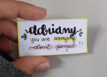

Tenho 18 anos, estudo no IFRN campus Ceará-Mirim,faço o curso tecnico em informática, adoro ler (terror, suspense.); tenho uma irmã mais nova que chama-se Andrielly, minha familia e esse mal hábito de colocar todo mundo começando com a letra 'A'. Estudo indepedentemente a luta por espaço e reconhecimento das mulheres no brasil.
Não tenho muitos amigos, só conheço muitas pessoas, não gosto de sair de casa, não gosto muito de falar com pessoas que acabei de conhecer, odeio falar em público e sou mais timida do que realmente pareço.